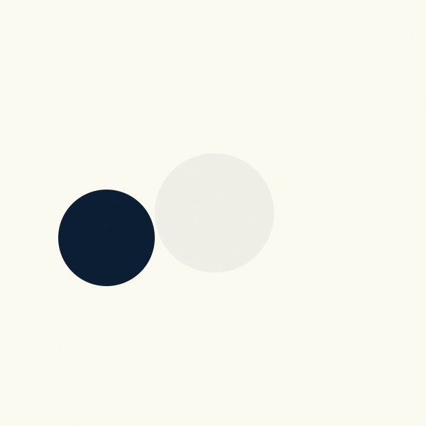

INPUT IMAGE Starch sample Sample  Choose image Restore sample Showing the sample image from the supplied CNN run.
MODEL OUTPUT Classification Prediction available Predicted class Starch Confidence100.00% Class probabilities Pure0.00% Starch100.00% Urea0.00% Values shown are from the supplied CNN result. Model inference is not connected to this page. The image changed. The displayed result belongs to the original sample; inference has not been run for this image.